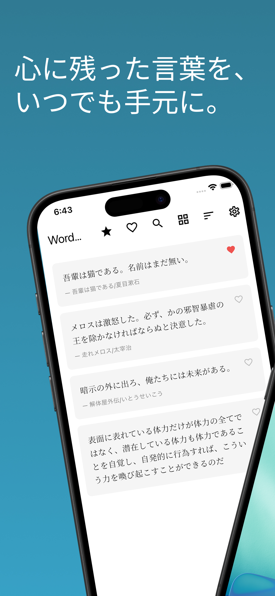
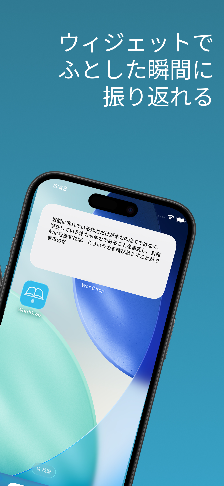
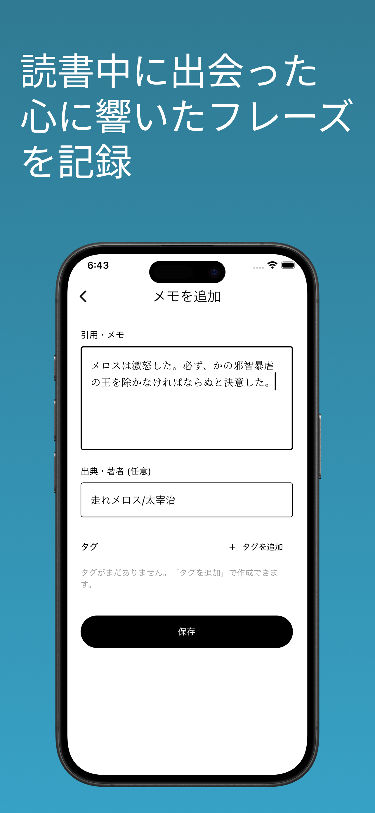
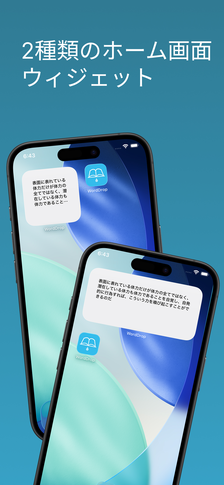
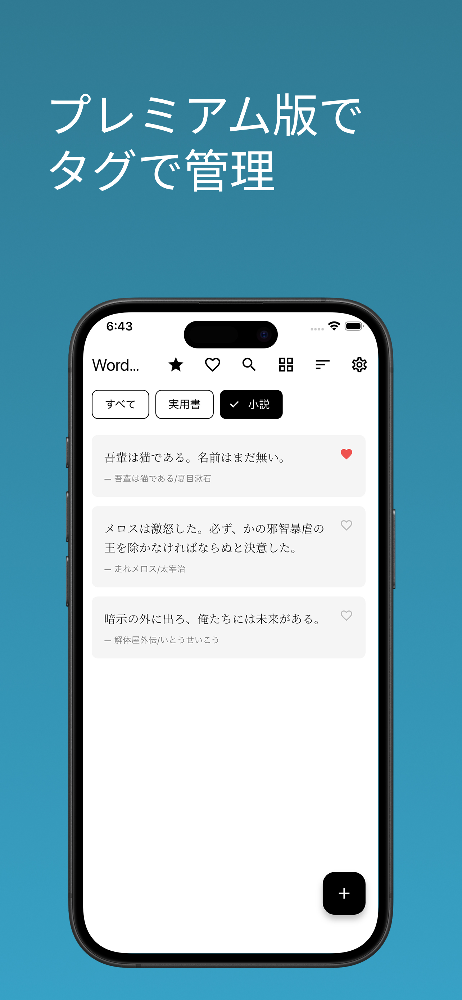

心に残った言葉を、
いつでも手元に。
WordDropは、読書中に出会った名言や心に響いたフレーズを記録し、ホーム画面ウィジェットでふとした瞬間に振り返れるアプリです。
読んでいるとき、ふと心に刺さる一文がある。
でも次のページをめくれば、いつの間にか忘れてしまう。
そんな「あなたにとって意味のある言葉」だけを手元に残しませんか？
App Store
Google Play (準備中)





主な機能
名言・メモの保存
出典・著者の記録も可能。読書中に出会った言葉をすぐに記録できます。
ホーム画面ウィジェット
保存した言葉がランダムで表示。ふとした瞬間に振り返れます。
お気に入り・検索・並び替え
お気に入り登録や検索、並び替えで大切な言葉にすぐアクセス。
リスト/グリッド表示
表示スタイルを切り替えて、自分に合った見方で言葉を眺められます。
完全オフライン対応
すべてのデータはデバイスに保存。アカウント登録もネット接続も不要です。
Premium
プレミアムプラン
広告の非表示
タグ／カテゴリで整理
CSVデータエクスポート
ウィジェット表示対象の絞り込み